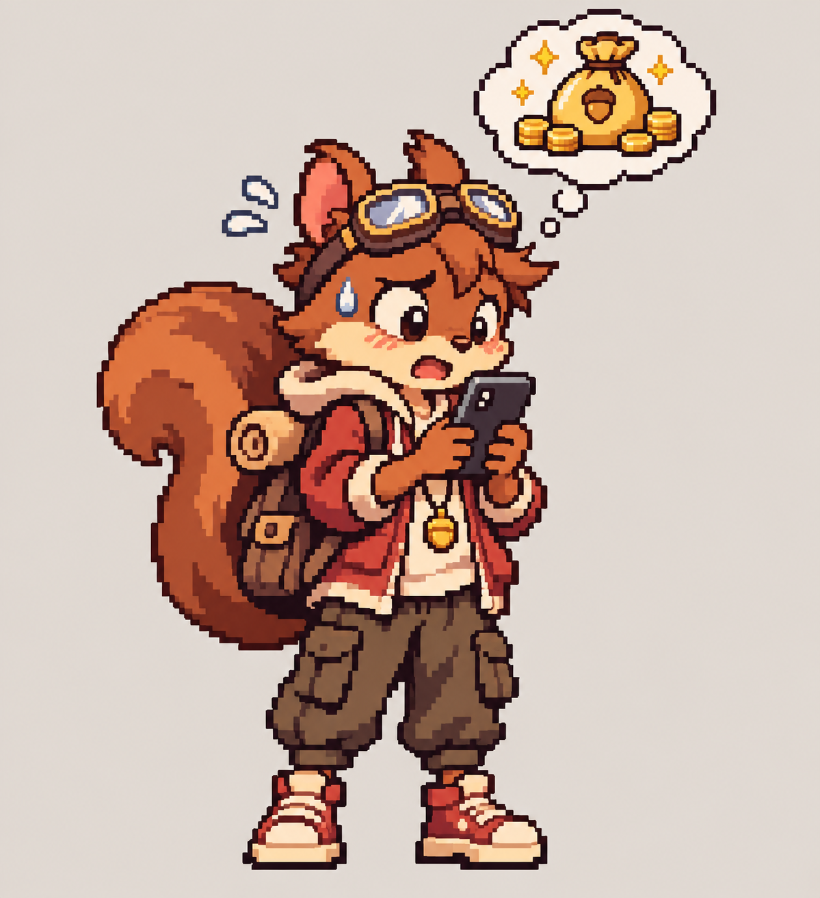
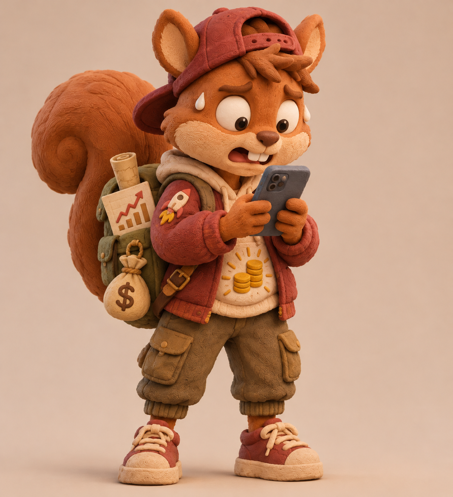
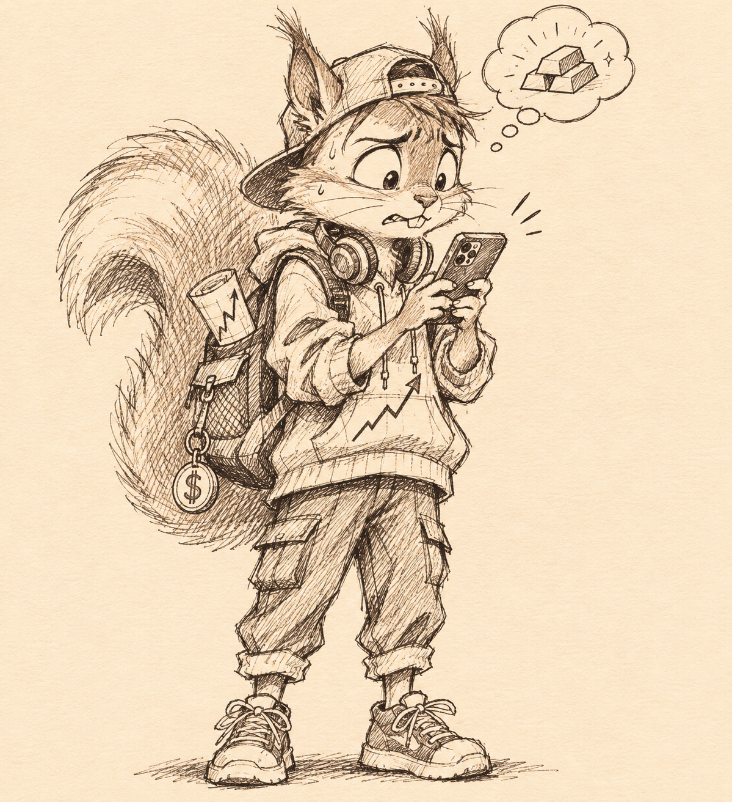
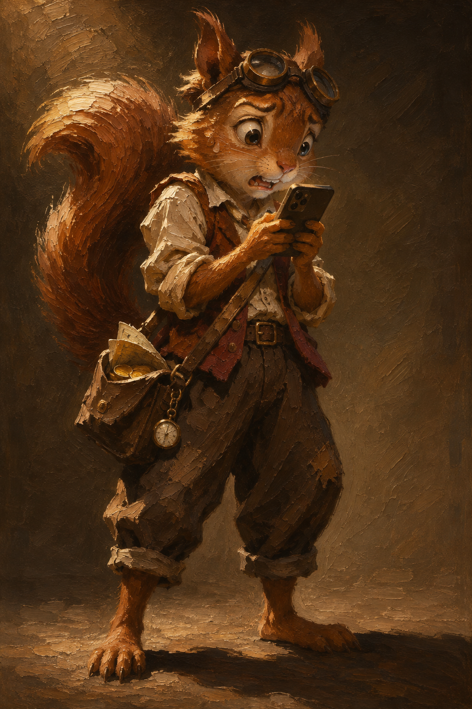

그림체 계열 4종 비교
이번에는 캐릭터 디자인을 고정하지 않고, 그림체 계열 자체가 다른 4가지로 뽑았습니다. 같은 캐릭터가 계열에 따라 어떻게 달라지는지 보는 용도입니다.

레트로 휴대용 게임 느낌. 작은 화면에서 강함.

무광 점토 질감, 스톱모션 인형 느낌.

빠른 선과 해칭. 손으로 그린 메모 같은 질감.

두꺼운 붓터치와 명암 대비. 가장 무겁고 드라마틱.
고르실 때 볼 점: 빚과 파산의 무게를 담는지, 방치형 화면에서 읽히는지, 개발과 생산 부담이 맞는지.
계열 하나를 고르면 그 계열 안에서 캐릭터 디자인을 다시 잡고 표정 5종을 뽑겠습니다.